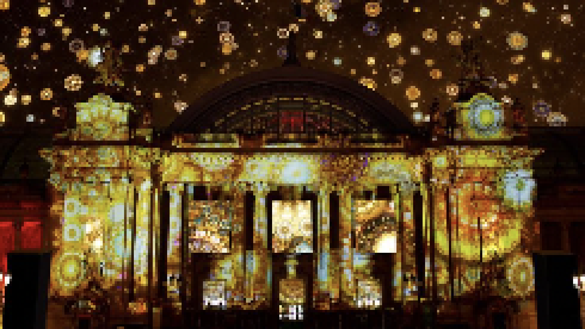

> title
국립현대미술관 미술은행 소장품 특별전 「돌아온 미래 Super Nature-Hypnagogia」
> content
국립현대미술관 서울관 경내 외부 문화재인 종친부 공간에서 《돌아온 미래》를 12월 15일부터 27일까지 개최한다.
미술은행 소장품인 작가그룹 꼴라쥬플러스(col.l.age+ 장승효&김용민)의 《Hypnagogia》(2016)는 '꿈과 현실, 실재와 환상이 교차하는 상태'의 뜻으로 정해진 길을 향해
끊임없이 날아가는 나비의 여정을
과거와 현재, 서로 다른 문화가 중첩되는 화려한 이미지로 보여주는 작품이다. 종친부 야외에서 최초로 관람객을 맞이하는 이번 전시는 가로9m, 세로3m의 대형 미디어 설치로 미술관 외부에서
관람객에게 시공간을 넘나드는
시각적 경험을 제공한다.
기존 소장품 외 새롭게 선보이는 미디어 큐브《Super Nature》는 전 세계적 의제인 환경, 생태, 지구를 소재로 인간성의 회복, 자연에 대한 인식 전환이라는 화두를 던지며
포스트 코로나 시대를 맞이하는 우리
미래의 지속가능성을 이야기한다. 두 작품을 통해 관람객은 코로나19 위기를 계기로 자연과 인간의 관계, 이를 통한 사회적 연대와
교감의 중요성을 되새겨 볼 수 있을 것이다.
특히 이번 전시는 국립현대미술관 미술은행의 소장품을 보다 다양한 형태로 나눌 수 있는 기회이자, 코로나19로 휴관중인 서울관 야외 전시로 문화예술 향유가 어려운 국민들에게 예술과 함께하는 휴식을 선사할 것으로
기대된다.
